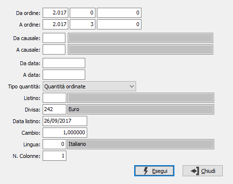

Stampa etichette ordini
Il programma permette la stampa delle etichette prodotti sulla base degli ordini clienti emessi.

DA ORDINE: tre campi per contenere rispettivamente anno, serie e numero del documento da cui si vuole iniziare la selezione. Confermando a vuoto, la selezione inizia dal primo documento compatibile con i successivi parametri.
A ORDINE: tre campi per contenere rispettivamente anno, serie e numero del documento con cui si vuole concludere la selezione. Confermando a vuoto, la selezione termina con l’ultimo documento compatibile con i successivi parametri.
DA CAUSALE: codice della causale documento da cui si vuole iniziare la selezione. Confermando a vuoto, la selezione inizia dalla prima causale valida. Sul campo sono attive le funzioni di ricerca (F9).
A CAUSALE: codice della causale documento con cui si vuole iniziare la selezione. Confermando a vuoto, la selezione termina all’ultima causale valida. Sul campo sono attive le funzioni di ricerca (F9).
DA DATA: data documento da cui si vuole iniziare la selezione. Confermando a vuoto, la selezione inizia dalla prima data valida.
A DATA: data documento con cui si vuole concludere la selezione. Confermando a vuoto, la selezione inizia dalla prima data valida.
TIPO QUANTITÀ: Combo box che indica il tipo di quantità per la quale si desidera effettuare la stampa delle etichette. Valori ammessi: Quantità ordinate, Quantità da spedire, Quantità annullate.
LISTINO: eventuale codice listino per la determinazione del prezzo. Sul campo sono attive le funzioni di ricerca (F9) sulla tabella stessa.
DIVISA: eventuale codice divisa per la determinazione del prezzo. Sul campo sono attive le funzioni di ricerca (F9) sulla tabella stessa.
DATA LISTINO: eventuale data di validità del listino utilizzato per la determinazione del prezzo.
CAMBIO: eventuale cambio verso la divisa di gestione, utilizzato per la conversione del prezzo dalla divisa del listino.
LINGUA: eventuale codice lingua per la traduzione delle descrizioni. Sul campo sono attive le funzioni di ricerca (F9) sulla tabella stessa.
N. COLONNE: identifica il n. colonne del modulo di stampa; valori possibili: 1,2.